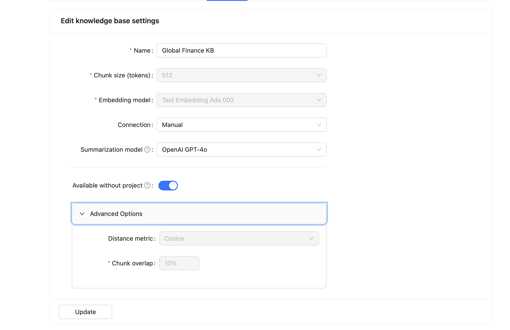
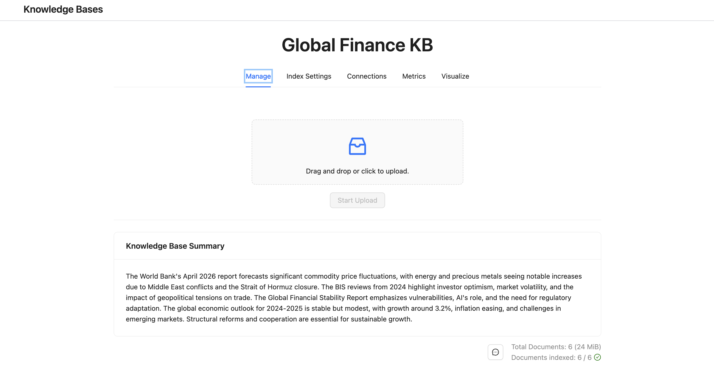
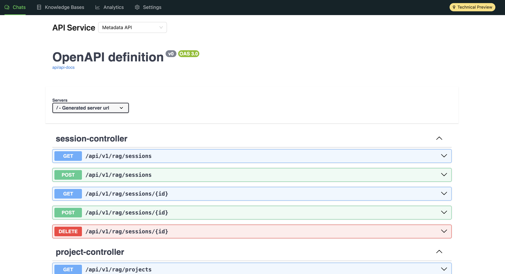

Agentic RAG-App Evaluation¶
This demo shows Agent Studio orchestrating an end-to-end RAG evaluation pipeline against a RAG Studio knowledge base — generating ground-truth Q&A pairs from a document, uploading it, querying the knowledge base, and scoring retrieval and generation quality across five metrics.
For the full workflow specification (including tool source), see rag_evaluation_workflow.md.
Note
The rag_studio_tool source is included in this lab. See the
RAG Studio Tool setup page and the
RAG Studio overview for configuration details.
The Knowledge Base: Global Financial Markets & Geopolitical Risk¶
This demo uses a knowledge base built from public research reports on global financial market changes driven by geopolitical events in 2024–2025, with a focus on the Middle East conflict and its impact on oil, energy, equities, and macroeconomic stability.
Knowledge base documents (pre-downloaded)¶
The following PDFs are ready to upload to your RAG Studio knowledge base. Click a filename to download it directly.
| File | Publisher | Report | Coverage |
|---|---|---|---|
| worldbank_geopolitical_oil_supply_shocks.pdf | World Bank | The Effects of Geopolitical Oil Supply Shocks (Special Focus) | How oil-supply conflicts transmit to prices, inflation, and growth — three escalation scenarios |
| worldbank_cmo_apr2026.pdf | World Bank | Commodity Markets Outlook — April 2026 (full report, 69 pp.) | Energy price forecasts, geopolitical risk premium, post-escalation trajectory |
| worldbank_cmo_apr2026_forecasts.pdf | World Bank | Commodity Markets Outlook — April 2026 (executive summary) | Compact price forecast tables — good for quick Q&A pairs |
| imf_weo_oct2024.pdf | IMF | World Economic Outlook — October 2024 ("Policy Pivot, Rising Threats") | Global growth risks from Middle East conflict, inflation outlook, policy tradeoffs |
| imf_gfsr_oct2024.pdf | IMF | Global Financial Stability Report — October 2024 ("Steadying the Course") | Financial stability risks from geopolitical escalation, asset price volatility |
| bis_quarterly_review_sep2024.pdf | BIS | BIS Quarterly Review — September 2024 | International banking developments, geopolitical risk and financial fragmentation |
| bis_quarterly_review_dec2024.pdf | BIS | BIS Quarterly Review — December 2024 | Latest market developments, commodity price dynamics, financial stability |
Recommended documents for the demo
Start with worldbank_geopolitical_oil_supply_shocks.pdf — it is concise (Special Focus chapter), has clear factual claims about three conflict escalation scenarios and their price impacts, and generates well-scoped Q&A pairs. Add imf_weo_oct2024.pdf as a second document for broader macro context.
Workflow Overview¶
The RAG evaluation workflow performs five sequential tasks:
- Generate Ground Truth — Read the document and generate 5–10 Q&A pairs
- Verify Quality — Validate and score each Q&A pair (approve ≥ 0.8)
- Upload Document — Upload the PDF to the RAG Studio knowledge base
- Query RAG — Query the knowledge base with each validated question
- Evaluate Results — Score retrieval and generation quality across 5 metrics
Each task produces JSON output only — no PDF reports. Agent 3 uses write_to_shared_pdf
internally to create an intermediate upload file; that PDF is not a user-facing deliverable.
┌──────────┐ ┌──────────┐ ┌──────────┐ ┌──────────┐ ┌──────────┐
│ TASK 1 │ │ TASK 2 │ │ TASK 3 │ │ TASK 4 │ │ TASK 5 │
│ Generate │───▶│ Verify │───▶│ Upload │───▶│ Query │───▶│ Evaluate │
│ Ground │ │ Quality │ │ Document │ │ RAG │ │ Results │
│ Truth │ │ │ │ │ │ │ │ │
└────┬─────┘ └────┬─────┘ └────┬─────┘ └────┬─────┘ └────┬─────┘
▼ ▼ ▼ ▼ ▼
┌──────────┐ ┌──────────┐ ┌──────────┐ ┌──────────┐ ┌──────────┐
│ AGENT 1 │ │ AGENT 2 │ │ AGENT 3 │ │ AGENT 4 │ │ AGENT 5 │
│ Q&A Pair │ │ Quality │ │ Document │ │RAG Query │ │Evaluation│
│Generator │ │Verifier │ │ Uploader │ │Specialist│ │ Analyst │
└──────────┘ └──────────┘ └──────────┘ └──────────┘ └──────────┘
Part 1 — Explore RAG Studio First¶
Before building the workflow, spend a few minutes setting up and exploring RAG Studio directly.
1.1 Create the Knowledge Base¶
In RAG Studio, go to Knowledge Bases → Create (or edit an existing base) and configure
the settings shown below. Use the name Global Finance KB — this must match the
knowledge_base_name parameter when you configure rag_studio_tool later.

| Setting | Value |
|---|---|
| Name | Global Finance KB |
| Chunk size (tokens) | 512 |
| Embedding model | Text Embedding Ada 002 |
| Connection | Manual |
| Summarization model | OpenAI GPT-4o |
| Available without project | ON |
| Distance metric | Cosine |
| Chunk overlap | 10% |
Click Update (or Create) to save the knowledge base.
1.2 Upload Documents¶
Open Global Finance KB → Manage and upload the pre-downloaded PDFs from the
knowledge base table above — not the
sample_documents/ text files (those are pasted at Test time in Part 5). Drag and drop
PDFs into the upload area, then click Start Upload. Wait until all documents show as
indexed before running the workflow.

When indexing completes, you should see a summary of the uploaded content and a status like Documents indexed: 6 / 6. You can also let Agent 3 upload a single document generated from pasted text during the workflow run (see Task 3).
1.3 Query RAG Studio Directly¶
Start a chat session against Global Finance KB and try a question about the document content:
"What are the main risks to oil markets from the Middle East conflict in 2024?"
Notice the answer and the retrieved chunks shown in the Sources panel. This is exactly what the RAG Query agent (Task 4) will automate — but across 5–10 questions at once with automatic scoring.
1.4 Generate Your CDP API Key¶
The workflow needs a CDP API key to authenticate against RAG Studio.
- In CDP Management Console, click your username (bottom-left) → User Settings.
- Go to API Keys → Create API Key.
- Select both audiences: Control Plane API and Workload API. Click Create.
- Copy the key immediately — it is only shown once.
You will use this key as the api_key parameter when configuring the RAG Studio Tool in
the workflow.
Warning
The API key is only shown once. If you lose it, create a new one.
1.5 Understand the RAG Studio API¶
The rag_studio_tool calls RAG Studio REST endpoints under the hood. In RAG Studio, open
Settings → API Service → Metadata API to browse the available endpoints:

| API endpoint | Tool action |
|---|---|
GET /api/v1/rag/dataSources |
list_knowledge_bases, KB lookup for query/upload |
POST /api/v1/rag/dataSources/{id}/files |
upload_document |
POST /api/v1/rag/sessions |
query — creates a temporary session |
GET /api/v1/rag/sessions |
get_sessions |
DELETE /api/v1/rag/sessions/{id} |
query — cleans up after each query |
GET /llm-service/sessions/{id}/chat-history |
get_chat_history |
For the query action, the tool creates a session, sends the question via the streaming
completion endpoint, collects the answer and source chunks, then deletes the session.
See RAG Studio Tool for full registration and parameter details.
Part 2 — Set Up the RAG Studio Tool¶
The workflow uses a custom rag_studio_tool. Register it in Agent Studio's Tools Catalog
before building the workflow.
See the full tool setup guide: RAG Studio Tool
Supported actions¶
| Action | Description |
|---|---|
query |
Send a question to the knowledge base; returns answer and source citations |
upload_document |
Upload a local file into the configured knowledge base |
list_knowledge_bases |
List all knowledge bases with document count and embedding model |
get_sessions |
List existing RAG sessions |
get_chat_history |
Retrieve message history with per-turn evaluations (requires session_id) |
UserParameters (configure once per tool registration)¶
Set these in the Agent Studio Tools Catalog. They apply to every agent that uses this tool.
| Parameter | Description | Example |
|---|---|---|
base_url |
RAG Studio API URL | https://ragstudio-xxx.cloudera.site |
api_key |
CDP API key from Part 1.4 | (paste the key you generated) |
knowledge_base_name |
Target knowledge base name (case-insensitive partial match) | Global Finance KB |
project_id |
Project ID for session creation | 1 |
inference_model |
LLM for RAG generation | gpt-4o (or instructor-provided model) |
response_chunks |
Number of retrieved chunks per query | 5 |
timeout_seconds |
HTTP timeout in seconds | 60 |
ToolParameters (set by agents at runtime)¶
When an agent calls the tool during workflow execution, it specifies:
| Parameter | Required for | Description |
|---|---|---|
action |
All calls | One of: query, upload_document, list_knowledge_bases, get_sessions, get_chat_history |
query |
query |
The question string to send to the knowledge base |
file_path |
upload_document |
Absolute path to the file on the Agent Studio host |
session_id |
get_chat_history |
Session ID to retrieve history for |
Part 3 — Build the Workflow¶
Create a Sequential workflow in Agent Studio named RAG Evaluation Workflow.
| Setting | Value |
|---|---|
| Is Conversational | OFF — each document evaluation is a self-contained pipeline run |
| Manager Agent | OFF — sequential pipeline, no routing needed |
Add a workflow input variable {document_text} for copy-pasted document content at test
time.
Agents¶
Agent 1 — Q&A Pair Generator¶
| Field | Value |
|---|---|
| Name | QA Pair Generator (Text Input) |
| Role | Ground Truth Dataset Creator for RAG Evaluation (Text-Based) |
| Backstory | You are an expert in creating high-quality question-answer pairs for evaluating RAG systems. You have deep experience in analyzing text content, identifying key information, and formulating diverse question types that thoroughly test retrieval and generation capabilities. Unlike your PDF-reading counterpart, you work directly with text content that users copy and paste, making you ideal for situations where file uploads are not available. You understand that effective RAG evaluation requires questions of varying difficulty and types — from simple factual lookups to complex reasoning questions. Your Q&A pairs serve as the gold standard ground truth against which RAG system outputs will be measured. |
| Goal | See below |
| Tools | None |
Goal (copy this):
1. Receive and thoroughly analyze the provided text content from {document_text}.
2. Generate 5-10 high-quality question-answer pairs covering: Factual Questions (2-3), Reasoning Questions (2-3), Summarization Questions (1-2), Comparison Questions (1-2).
3. For each Q&A pair, provide: question, answer, type (factual/reasoning/summarization/comparison), source_reference.
4. Output the Q&A pairs in the following JSON format:
{
"document_name": "User Provided Text",
"qa_pairs": [
{
"id": 1,
"question": "What is the question text?",
"answer": "The ground truth answer",
"type": "factual",
"source_reference": "Paragraph 3, starting with '...'"
}
]
}
Agent 2 — Q&A Quality Verifier¶
| Field | Value |
|---|---|
| Name | QA Quality Verifier (Text Input) |
| Role | Ground Truth Dataset Quality Assurance Specialist (Text-Based) |
| Backstory | You have extensive experience in data validation and quality assurance within AI and machine learning projects. Over the years, you have developed a keen eye for spotting subtle errors and inconsistencies in large datasets. You approach your work methodically, combining automated checks with thoughtful manual review to guarantee that datasets are reliable and useful for downstream applications. Unlike your PDF-reading counterpart, you work directly with text content that users copy and paste, allowing you to validate Q&A pairs even when file uploads are not available. You understand that the quality of ground truth data directly impacts evaluation accuracy — a flawed Q&A pair will produce misleading evaluation results. Your rigorous validation ensures that only high-quality, unambiguous Q&A pairs proceed to the evaluation pipeline. |
| Goal | See below |
| Tools | None |
Goal (copy this):
1. Receive the Q&A pairs generated by the Q&A Pair Generator.
2. Reference the original text content from {document_text} for validation.
3. Validate each Q&A pair for: Answer accuracy, completeness, conciseness; Question clarity and answerability; Question type coverage and diversity; No duplicates, accurate source references.
4. Assign quality score (0-1) to each pair, flag issues. Approved pairs must score >= 0.8.
5. Output validation report in the following JSON format:
{
"validation_summary": {
"total_pairs": 10,
"approved": 8,
"flagged": 2,
"overall_quality_score": 0.85,
"question_type_coverage": {"factual": 3, "reasoning": 3, "summarization": 2, "comparison": 2}
},
"validated_pairs": [
{
"id": 1,
"question": "...",
"answer": "...",
"type": "factual",
"source_reference": "Paragraph 3",
"quality_score": 0.95,
"status": "approved",
"issues": []
}
],
"recommendations": ["Consider revising flagged Q&A pairs before proceeding"]
}
Agent 3 — Document Generator & Uploader¶
| Field | Value |
|---|---|
| Name | Document Generator and Uploader (Text Input) |
| Role | PDF Generator and RAG Knowledge Base Manager |
| Backstory | You are responsible for converting text content into PDF documents and managing them in the RAG Studio knowledge base. Unlike the standard Document Uploader who works with existing files, you handle situations where users provide text content directly through copy-paste. You understand that the text must first be properly formatted as a PDF document before it can be uploaded to the RAG system for indexing. Your expertise ensures that text-based inputs are seamlessly converted and ingested into the knowledge base, enabling RAG evaluation even when file uploads are not available. |
| Goal | See below |
| Tools | write_to_shared_pdf, rag_studio_tool |
Goal (copy this):
1. Receive the text content from {document_text}.
2. Use write_to_shared_pdf tool with output_file="source_document.pdf" and markdown_content set to the text content.
3. After PDF generation, use rag_studio_tool with action="upload_document" to upload the generated PDF to the configured knowledge base.
4. Verify both operations were successful.
5. Report combined status in the following JSON format:
{
"pdf_generation": {
"status": "success",
"file_path": "/home/cdsw/source_document.pdf",
"file_name": "source_document.pdf"
},
"upload_status": {
"status": "success",
"knowledge_base_name": "Global Finance KB",
"knowledge_base_id": "kb-123",
"document_name": "source_document.pdf",
"message": "Document uploaded successfully",
"timestamp": "2026-03-03T10:30:00Z"
}
}
Intermediate PDF only
Agent 3 uses write_to_shared_pdf to create source_document.pdf because
rag_studio_tool upload_document requires a file path. This PDF is an upload
artifact, not a workflow deliverable.
Agent 4 — RAG Query Specialist¶
| Field | Value |
|---|---|
| Name | RAG Query Specialist |
| Role | RAG System Tester and Response Collector |
| Backstory | You systematically query the RAG system with each ground-truth question and record both the generated answers and the retrieved context chunks for evaluation. You meticulously record both generated answers and retrieved context chunks — the raw material needed to evaluate retrieval and generation separately. |
| Goal | For each approved Q&A pair from Task 2, call rag_studio_tool with action=query and the question text. Collect RAG answers and retrieved chunks. Output JSON with query_results array preserving Q&A pair IDs. |
| Tools | rag_studio_tool |
Agent 5 — RAG Evaluation Analyst¶
| Field | Value |
|---|---|
| Name | RAG Evaluation Analyst |
| Role | RAG Quality Assessment Specialist |
| Backstory | You evaluate RAG system performance using five metrics covering retrieval and generation quality: Context Relevance, Faithfulness, Answer Relevance, Semantic Similarity, and Correctness. You use LLM-as-judge techniques combined with semantic analysis for objective scoring. |
| Goal | See below |
| Tools | None |
Goal (copy this):
1. Evaluate each query result from Agent 4 against the ground truth answer.
2. Compute five metrics per question (all 0-1): context_relevance, faithfulness, answer_relevance, semantic_similarity, correctness.
3. Provide reasoning for each score.
4. Compute summary statistics across all questions.
5. Output the evaluation report in the following JSON format:
{
"evaluation_summary": {
"total_questions": 10,
"avg_context_relevance": 0.85,
"avg_faithfulness": 0.90,
"avg_answer_relevance": 0.88,
"avg_semantic_similarity": 0.82,
"avg_correctness": 0.80
},
"detailed_results": [
{
"id": 1,
"question": "...",
"question_type": "factual",
"scores": {
"context_relevance": 0.9,
"faithfulness": 1.0,
"answer_relevance": 0.85,
"semantic_similarity": 0.8,
"correctness": 0.9
},
"reasoning": "..."
}
],
"recommendations": ["..."]
}
Tasks¶
Task 1 — Generate Ground Truth¶
| Field | Value |
|---|---|
| Description | Analyze the document content provided directly as text input {document_text} (copy-pasted by the user). Generate a comprehensive set of question-answer pairs that will serve as the ground truth dataset for RAG evaluation. The generated Q&A pairs must be diverse, covering different question types and difficulty levels to thoroughly test the RAG system's retrieval and generation capabilities. |
| Expected Output | See below |
| Agent | QA Pair Generator (Text Input) |
Expected Output (copy this):
A JSON object containing 5-10 Q&A pairs with the following structure:
{
"document_name": "User Provided Text",
"qa_pairs": [
{"id": 1, "question": "...", "answer": "...", "type": "factual", "source_reference": "Paragraph 3"}
]
}
Task 2 — Verify Quality¶
| Field | Value |
|---|---|
| Description | Review and validate the Q&A pairs generated in the previous task against the original text content provided as {document_text}. Verify that each answer is factually accurate and grounded in the source text. Assess each pair for accuracy, clarity, completeness, and appropriate difficulty classification. Filter out low-quality pairs and provide quality scores for approved pairs (approve >= 0.8). |
| Expected Output | See below |
| Agent | QA Quality Verifier (Text Input) |
Expected Output (copy this):
A JSON validation report with the following structure:
{
"validation_summary": {"total_pairs": 10, "approved": 8, "flagged": 2, "overall_quality_score": 0.85, "question_type_coverage": {...}},
"validated_pairs": [{"id": 1, "question": "...", "answer": "...", "type": "factual", "quality_score": 0.95, "status": "approved", "issues": []}],
"recommendations": ["..."]
}
Task 3 — Upload Document¶
| Field | Value |
|---|---|
| Description | First, use the write_to_shared_pdf tool with output_file set to "source_document.pdf" and markdown_content set to the text content from {document_text} to generate a PDF document from the user's pasted text. Then, use the rag_studio_tool with action "upload_document" and file_path parameter set to the generated PDF path to upload the document to the configured RAG Studio knowledge base. Ensure the document is successfully ingested and ready for retrieval queries. |
| Expected Output | See below |
| Agent | Document Generator and Uploader (Text Input) |
Expected Output (copy this):
A JSON status report with the following structure:
{
"pdf_generation": {"status": "success", "file_path": "/home/cdsw/source_document.pdf", "file_name": "source_document.pdf"},
"upload_status": {"status": "success", "knowledge_base_name": "...", "knowledge_base_id": "...", "document_name": "source_document.pdf", "message": "Document uploaded successfully", "timestamp": "..."}
}
Task 4 — Query RAG¶
| Field | Value |
|---|---|
| Description | For each approved question from the validated Q&A pairs, use the rag_studio_tool with action "query" and the query parameter set to the question text. Execute all queries against the RAG Studio knowledge base and collect both the RAG-generated answers and the retrieved source chunks for each query. |
| Expected Output | See below |
| Agent | RAG Query Specialist |
Expected Output (copy this):
A JSON object with the following structure:
{
"query_results": [
{"id": 1, "question": "...", "ground_truth_answer": "...", "rag_answer": "...", "retrieved_chunks": ["chunk 1...", "chunk 2..."], "question_type": "factual"}
]
}
Task 5 — Evaluate Results¶
| Field | Value |
|---|---|
| Description | Perform comprehensive evaluation of RAG system performance by comparing RAG outputs against ground truth answers. Apply multiple evaluation metrics covering both retrieval quality (context relevance) and generation quality (faithfulness, answer relevance, semantic similarity, correctness). Generate a detailed evaluation report with per-question scores and overall summary statistics as JSON. |
| Expected Output | See below |
| Agent | RAG Evaluation Analyst |
Expected Output (copy this):
A JSON evaluation report with the following structure:
{
"evaluation_summary": {"total_questions": 10, "avg_context_relevance": 0.85, "avg_faithfulness": 0.90, "avg_answer_relevance": 0.88, "avg_semantic_similarity": 0.82, "avg_correctness": 0.80},
"detailed_results": [{"id": 1, "question": "...", "question_type": "factual", "scores": {"context_relevance": 0.9, "faithfulness": 1.0, "answer_relevance": 0.85, "semantic_similarity": 0.8, "correctness": 0.9}, "reasoning": "..."}],
"recommendations": ["..."]
}
Part 4 — Configure the RAG Studio Tool¶
In the Configure step, fill in your RAG Studio connection details under the
rag_studio_tool parameters section.
| Parameter | Value |
|---|---|
| base_url | Your assigned RAG Studio URL |
| api_key | CDP API key from Part 1.4 |
| knowledge_base_name | Global Finance KB |
| project_id | 1 |
| inference_model | LLM model name (instructor-provided) |
| response_chunks | 5 |
| timeout_seconds | 60 |
Knowledge base must exist first
The target knowledge base must already exist in RAG Studio before running the workflow. Create it in Part 1.1 if you haven't already — the workflow uploads into it during Task 3.
Part 5 — Test the Workflow¶
In the Test step, paste your document text into the {document_text} input.
This workflow uses two separate document sets — they must not overlap:
- Knowledge base PDFs (table at the top of this page): upload once to Global Finance KB in RAG Studio (Part 1.2). These indexed PDFs power Task 4 retrieval.
- Sample text files (
sample_documents/): paste at Test time only. They are not included inkb_documents/and are not uploaded beforehand. This text powers Tasks 1–3 (ground-truth Q&A generation, validation, and Agent 3's PDF upload). Use at least 500 words of narrative prose — tables alone are too sparse for Q&A generation.
Keeping the two sets separate avoids duplicating content in the knowledge base and makes evaluation results easier to interpret.
Sample text files¶
All five samples are drawn from public reports that are not among the KB PDFs above. Download a file and paste its contents into {document_text}:
| File | Source report | Words | Use case |
|---|---|---|---|
| worldbank_cmo_executive_summary_oct2024.txt | World Bank CMO Oct 2024 (not in KB) | ~570 | Primary demo — Brent / Middle East scenarios |
| worldbank_cmo_executive_summary_oct2025.txt | World Bank CMO Oct 2025 (not in KB) | ~760 | Commodity outlook / geopolitical risks |
| imf_meca_reo_executive_summary_oct2024.txt | IMF Middle East REO Oct 2024 (not in KB) | ~670 | Regional growth / conflicts |
| imf_meca_reo_chapter1_outlook_oct2024.txt | IMF Middle East REO Oct 2024 Ch. 1 (not in KB) | ~520 | MENA oil exporters / fragmentation |
| bis_wp1249_geopolitics_trade.txt | BIS Working Paper 1249 (not in KB) | ~670 | Geopolitics and trade fragmentation |
Also available (download only): imf_meca_reo_executive_summary_oct2024.txt, imf_meca_reo_chapter1_outlook_oct2024.txt, and bis_wp1249_geopolitics_trade.txt.
Primary sample — World Bank CMO Oct 2024¶
Use the excerpt below from worldbank_cmo_executive_summary_oct2024.txt (~570 words). This report is not in the KB PDF set (the KB uses the April 2026 CMO instead).
Click to expand — paste this into {document_text}
Commodity Markets Outlook — Executive Summary
World Bank Group — October 2024
THE STATE OF COMMODITY MARKETS
The early 2020s were characterized by large global shocks—the COVID-19 pandemic recession and subsequent rebound, a sharp runup in inflation, and Russia's invasion of Ukraine—accompanied by highly correlated swings in commodity prices. Over the last year, the economic effects of those outsized shocks have substantially abated, with global economic growth steadying and inflation moving toward targets. Correspondingly, commodity markets appear to be departing from a period of tight synchronization. Over the last year, commodity prices have been buffeted by a wide range of developments, including shifting expectations about supply management, surges in conflict-related risk, trade restrictions, and weather-related supply shocks.
ENERGY AND GEOPOLITICAL RISK
In energy markets, geopolitical tensions have remained a critical driver of short-term price movements. Oil markets have responded to geopolitical flare-ups, with prices surpassing $90/bbl in October 2023 and April 2024. Anticipated oil price volatility approached its highest levels since Russia's invasion of Ukraine in early October 2024, as oil prices surged by 10 percent in just three days. Prices have tended to subsequently fall back, however, reflecting ample potential oil supply.
Commodity prices are expected to decrease by 5 percent in 2025 and 2 percent in 2026, after softening 3 percent this year. The Brent crude oil price is projected to average $80/bbl in 2024, before slipping to $73/bbl in 2025 and $72/bbl in 2026. Thus, from their 2022 high, annual average oil prices are expected to decline for four consecutive years through to 2026. The possibility of escalating conflict in the Middle East represents a substantial near-term upside risk to energy prices, with potential knock-on consequences for other commodities.
Three underlying longer-term factors shape the outlook. First, global oil consumption is decelerating, continuing the secular decline in the oil intensity of global GDP. Second, global oil supply continues to diversify, with the market share of non-OPEC+ producers gradually increasing. Third, following successive rounds of output cuts, OPEC+ holds spare oil capacity equivalent to slightly more than 7 percent of current global production—about double the average spare capacity in 2017-19, when the Brent oil price averaged $63/bbl.
RISK SCENARIOS
In the near term, the possibility of escalating conflict in the Middle East poses substantial upside risks to energy prices. A conflict-related reduction in the region's energy exports could drive oil and gas prices higher, with knock-on consequences for other commodities. Other upside risks stem from lower-than-expected North American oil output, increased competition for liquefied natural gas cargoes, and sustained, higher-than-assumed coal and natural gas consumption in Asia.
PRECIOUS METALS AND AGRICULTURE
Gold prices, which are particularly sensitive to geopolitical tensions, marched higher all year, standing 27 percent above their December 2023 level in September. In agricultural commodity markets, prices for grains and edible oils have softened on improved harvest prospects, though elevated freight costs from Red Sea disruptions continue to affect food trade flows for countries dependent on Suez Canal shipping routes. A conflict escalation scenario assessed in the report assumes global oil supply declines by 2 mb/d due to a conflict-related shock in late 2024—a shortfall comparable to the Iraq War in 2003 and the Libyan civil war in 2011. In response, the price of Brent crude oil would rise close to $92/bbl at peak impact. For 2025 as a whole, Brent would average $84/bbl, 15 percent above the baseline forecast.
Secondary sample — World Bank CMO Oct 2025¶
A second external option from worldbank_cmo_executive_summary_oct2025.txt (~760 words):
Click to expand — paste this into {document_text}
Commodity Markets Outlook — Executive Summary
World Bank Group — October 2025
Commodity prices are expected to decline by about 7 percent overall this year, reflecting subdued global economic activity, elevated trade tensions and policy uncertainty, and ample global supply of oil. In 2026, commodity prices are forecast to fall by a further 7 percent, a fourth consecutive year of decline, as global growth remains sluggish and the oil market oversupplied. Energy price movements are expected to continue contributing to global disinflation in 2026. Metals and minerals prices are projected to remain stable in 2026, while agricultural prices are forecast to edge down, primarily due to strong supply conditions. Precious metals prices are projected to rise another 5 percent, after a historically large, investment-driven rally of about 40 percent in 2025. Risks to the commodity price projections are tilted to the downside. Key downside risks include weakerthan-expected global growth, a longer-than-assumed period of economic policy uncertainty, and additional oversupply of oil. Upside risks include intensifying geopolitical tensions, the market impact of additional oil sanctions, supply reductions stemming from additional trade restrictions, unfavorable weather conditions, and faster-than-expected rollout of new data centers. Commodity price volatility in recent years has revived interest in supply management via international commodity agreements. Historical experience, however, shows that the most effective policy is to promote diversification, innovation, transparency, and market-based pricing— measures that build lasting resilience to commodity price volatility. Recent developments Commodity markets have been impacted by a confluence of factors over the past six months, leaving prices below 2024 levels. Continued subdued economic activity, trade restrictions and associated high economic policy uncertainty, and weather-related supply shocks have all affected commodity markets. Energy prices, in particular, have pulled down the World Bank Group’s overall commodity price index (figure 1.A). The softening of commodity prices in nominal U.S. dollars would have been larger without the depreciation of the dollar since early 2025. In energy markets, the announcement of a new set of U.S. sanctions on Russian oil companies in late October was followed by spike in oil prices. Prior to recent events, Brent oil prices declined by 14 percent in the first nine months of the year (y/y), reflecting an oversupplied market and sluggish global growth. Over the past two years, oil demand growth in China, a key source of demand, has been sharply below its 2015-19 average, weighing on prices, while growth in the rest of the world has been broadly steady (figure 1.B). Increasing oil production by eight OPEC+ members since April, on top of continued strong gains in non-OPEC countries, has put additional downward pressure on prices. The U.S. benchmark for natural gas prices rose by 64 percent in the first nine months of the year (y/y) as European demand for U.S. liquified natural gas (LNG) surged due to reduced electricity output from renewable sources and efforts to build stocks. Recent developments in base metals markets have been shaped by evolving trade policy and economic conditions in China. Metal prices recovered in 2025Q3 after declining earlier in the year, reflecting resilient demand in major economies. In the lead-up to the U.S. tariffs, importers front-loaded purchases of aluminum and copper, contributing to short-term market tightening. For copper, accelerated shipments to the United States lifted onshore inventories ahead of the August tariffs and widened the price spread between the COMEX and LME exchanges (figure 1.C). In addition, an accident at one of the world’s largest mines in September caused a spike in copper prices. Iron ore prices rebounded in the third quarter, supported by expectations of record-high steel exports and a temporary pickup in Chinese steel production, despite a prolonged downturn in the property sector. Among precious metals, for which prices have risen for eight consecutive quarters, gold has surged to successive record highs in the second half of 2025 on strong investment demand due to its safe-haven status amid elevated geopolitical uncertainty, macroeconomic factors such as recent FIGURE 1 Recent developments in commodity markets Commodity prices have fallen since the beginning of 2025, largely driven by lower energy prices. A sharp decline in oil prices in 2025 reflects sluggish oil demand growth in China and excess global supply. Market anticipation of tariffs led to unusually wide price differentials across major copper exchanges for several months in 2025. Gold prices surged to successive record highs in the second half of the year, largely reflecting safe-haven demand. Food prices have continued to edge down, while beverage prices experienced a sharp, weather-related spike in the first half of the year. A. Commodity prices B. Average annual increase in oil
Run and review¶
- Click Test in the workflow editor.
- Paste your document text into
{document_text}. - Click Run Workflow and watch the five-agent pipeline execute.
The Logs tab streams every tool call and LLM turn in real time. The Flow Diagram shows which agent is active at each step. Review the JSON output from Task 5 in the final agent response.
Evaluation Metrics¶
| Metric | What it measures | Scale |
|---|---|---|
| Context Relevance | Are the retrieved chunks relevant to the question? | 0–1 |
| Faithfulness | Is the RAG answer grounded in the retrieved context? | 0–1 |
| Answer Relevance | Does the RAG answer actually address the question? | 0–1 |
| Semantic Similarity | How similar is the RAG answer to the ground truth? | 0–1 |
| Correctness | Is the RAG answer factually correct vs. ground truth? | 0–1 |
Interpreting your results¶
| Pattern | Diagnosis |
|---|---|
| High Context Relevance + Low Correctness | Generation issue — retrieval works but LLM struggles |
| Low Context Relevance + Low Correctness | Retrieval issue — wrong chunks being fetched |
| Low Faithfulness + High Correctness | Answer is right but the LLM is not using the context (potential hallucination) |
| High all metrics | Good RAG configuration |
Troubleshooting¶
| Issue | Solution |
|---|---|
| RAG tool connection fails | Verify base_url, api_key, and knowledge_base_name |
| "Knowledge base not found" | Run the tool with action=list_knowledge_bases (from a session terminal, or add a temporary task) to see available names |
| PDF generation fails (Agent 3 upload step) | Check that write_to_shared_pdf is attached to Agent 3 and {document_text} is non-empty |
| No Q&A pairs generated | Ensure pasted text is at least 500 words |
| Low evaluation scores | Check knowledge base content and chunking strategy; try increasing response_chunks |